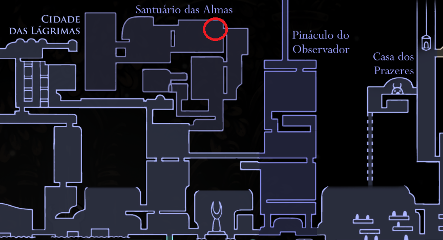

Refletindo os desejos do Sántuario das Almas de dominador a ALMA, melhora a capacidade do portador de lançar magias. Reduz o custo de ALMA para a canalização de magias.

Dobrador De Magias
Uma sala secreta no topo do Santuário das almas, um pouco antes de lutar
Mestre das Almas.
O amuleto é encontrado preso a uma máquina semelhante
ao Comprimidos de Tradição encontrados ao redor da área.
